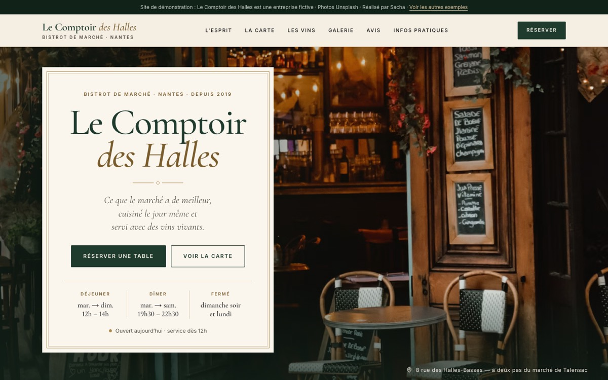
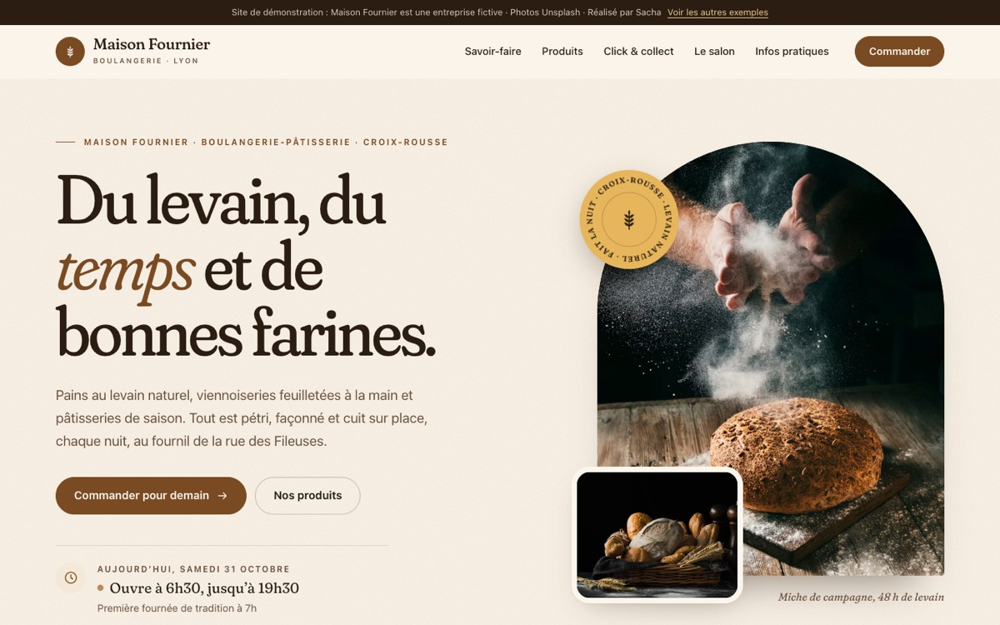
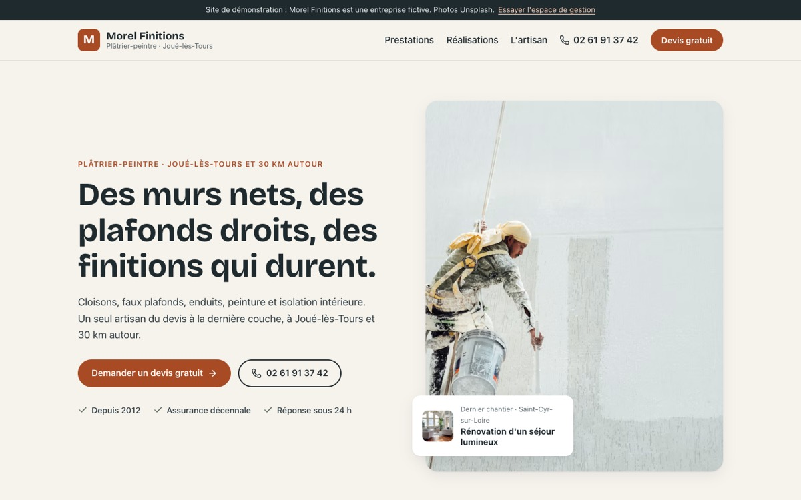
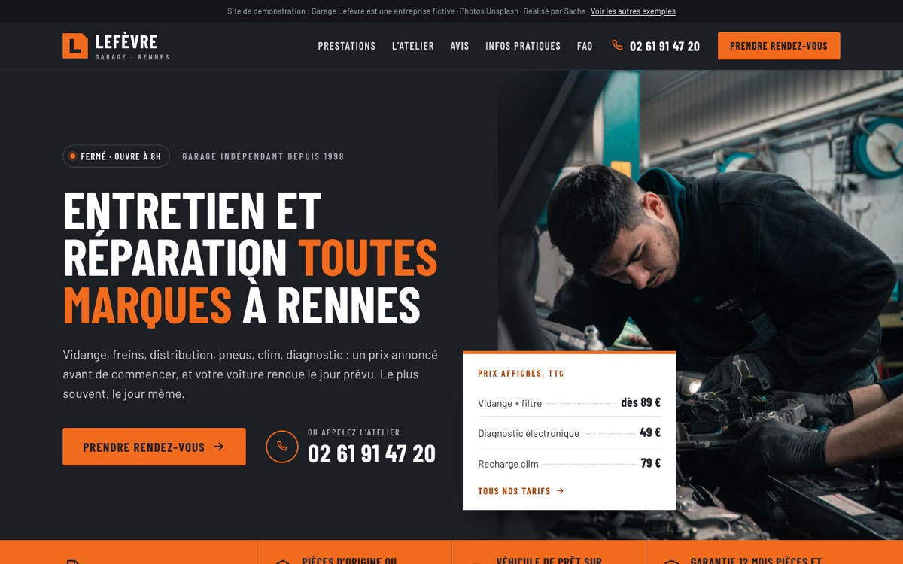
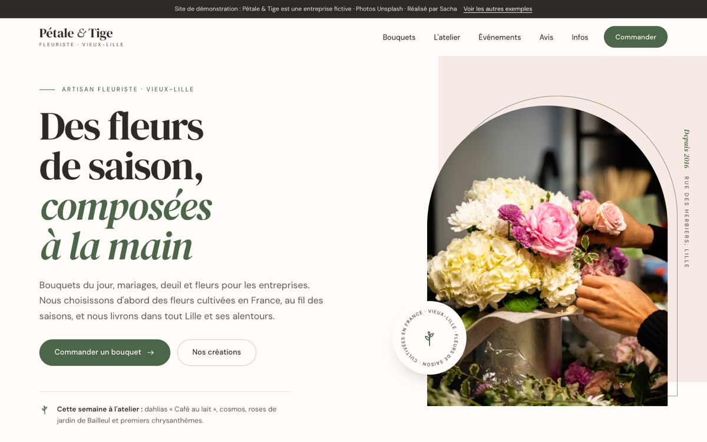
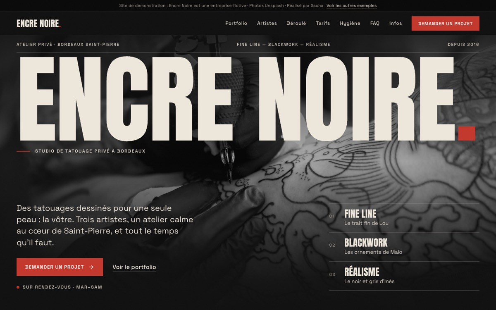
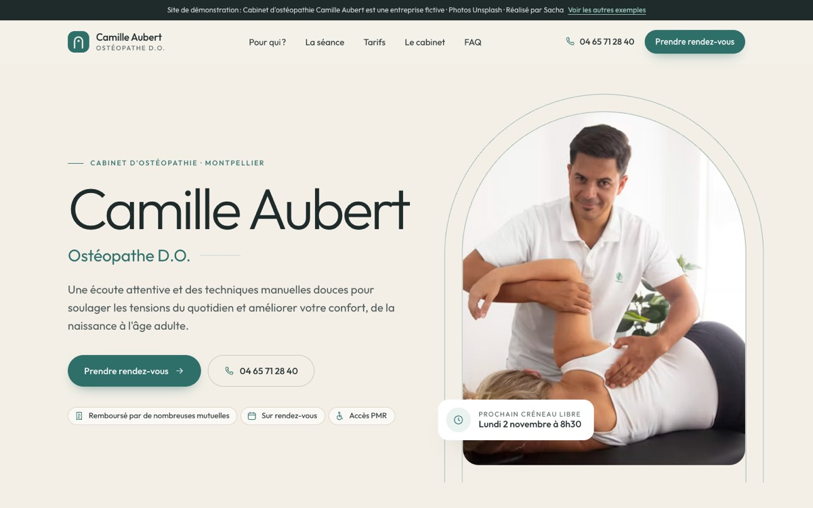
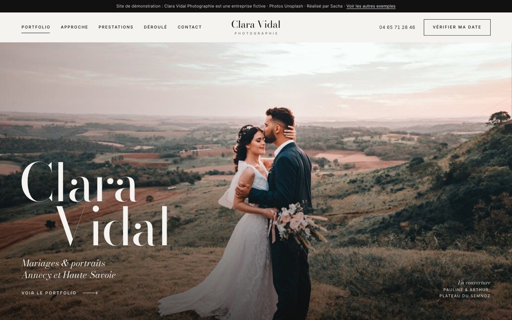

Restaurant · bistrotLe Comptoir des Halles
Carte, ardoise du jour, réservation en ligne, horaires.
Voir le site →
Boulangerie · pâtisserieMaison Fournier
Produits et prix, commande à retirer, horaires.
Voir le site →
Artisan du bâtimentMorel Finitions
Réalisations avant / après, devis en ligne, espace de gestion.
Voir le site →
Garage · autoGarage Lefèvre
Prestations et prix, prise de rendez-vous, avis.
Voir le site →
Commerce · fleuristePétale & Tige
Bouquets du moment, commande et livraison, événements.
Voir le site →
TatouageEncre Noire
Portfolio filtrable, artistes, demande de projet.
Voir le site →
Santé · bien-êtreCabinet Camille Aubert
Déroulement d'une séance, tarifs, prise de rendez-vous.
Voir le site →
Services · photographeClara Vidal Photographie
Portfolio plein écran, prestations, demande de devis.
Voir le site →